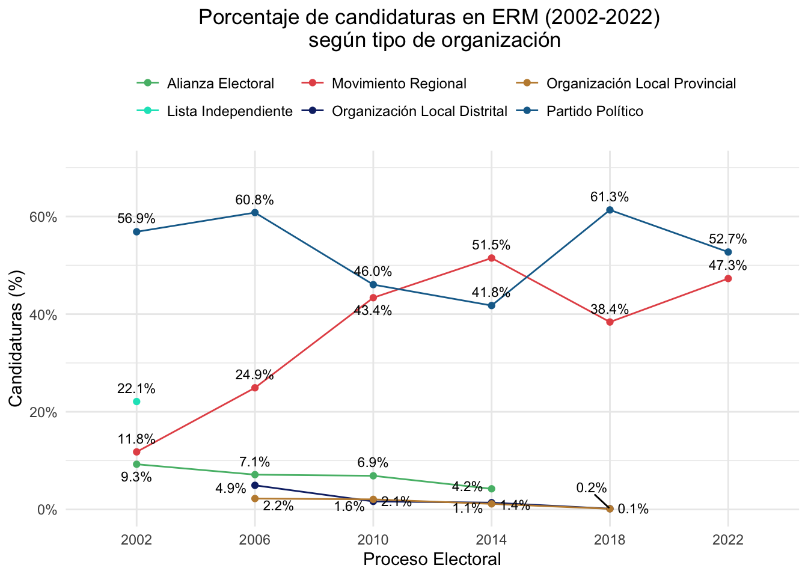
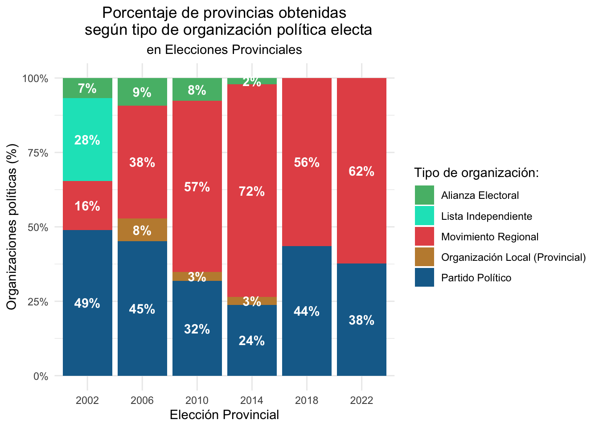
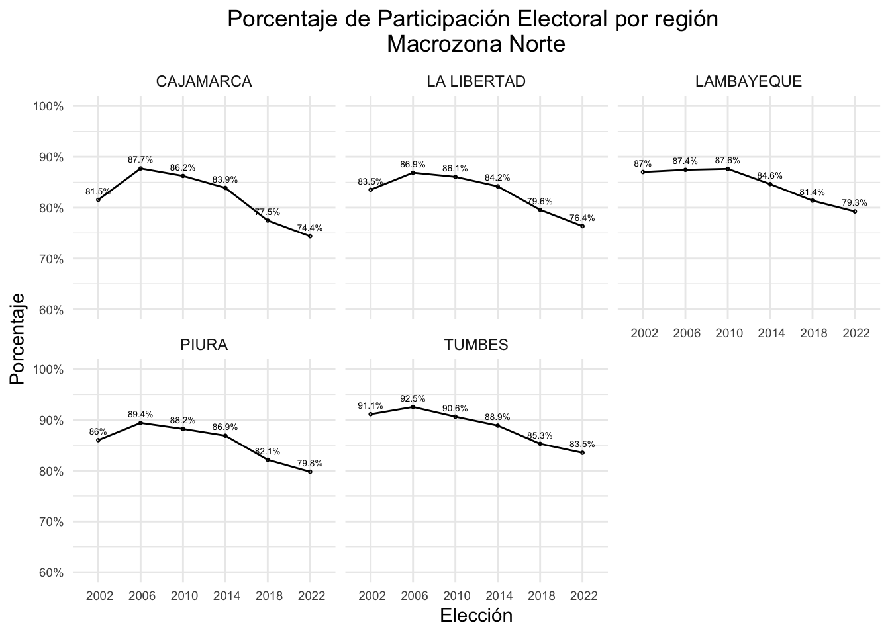
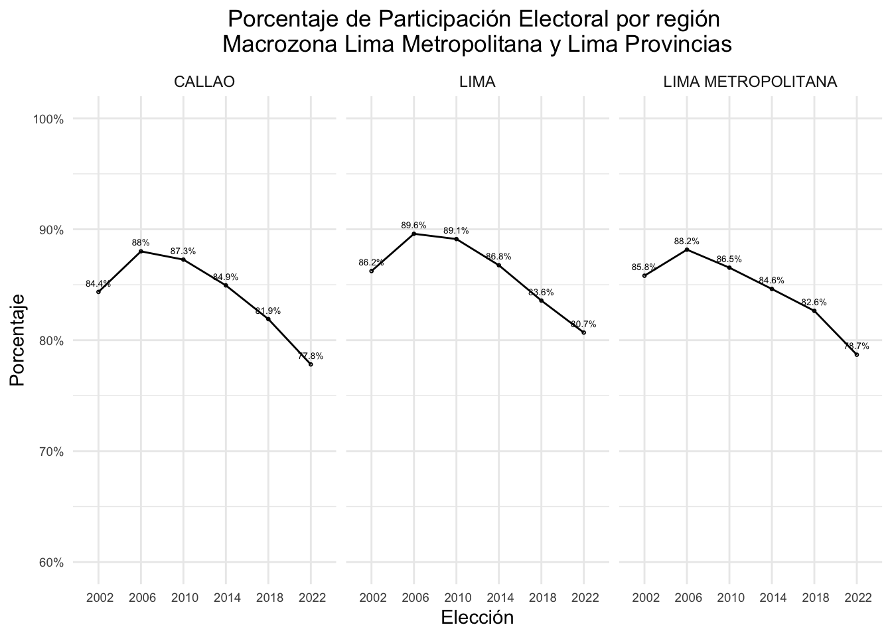
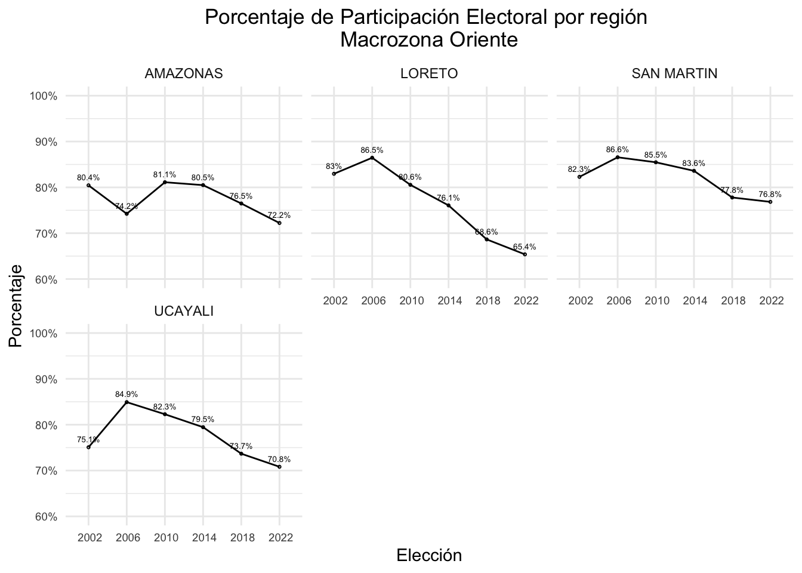
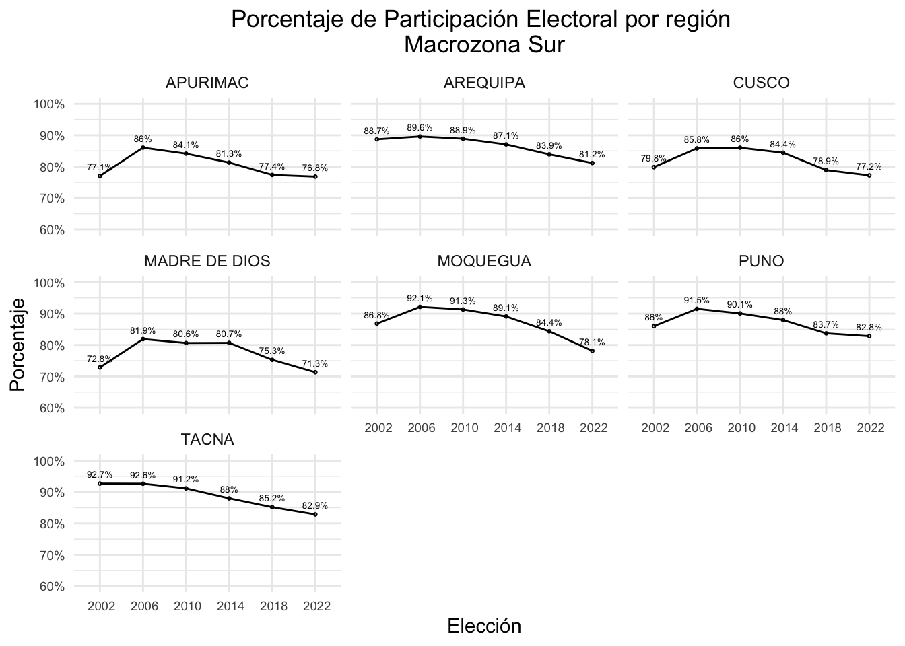
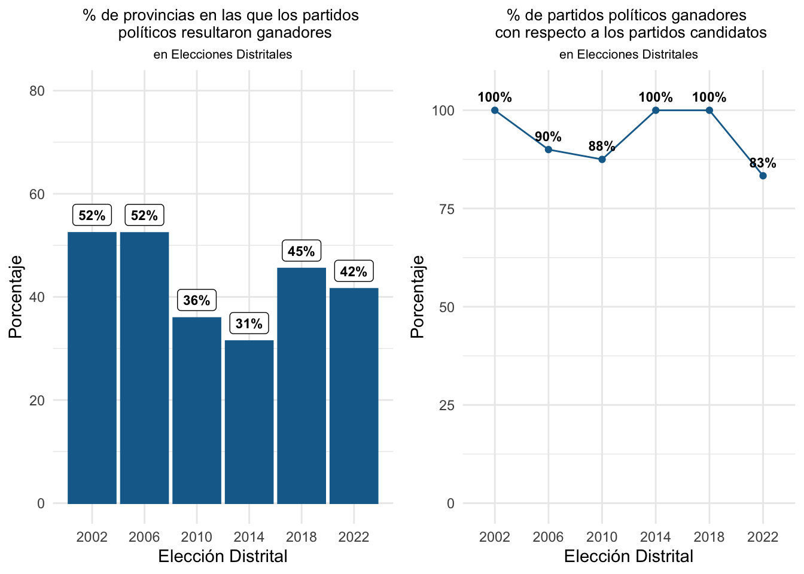
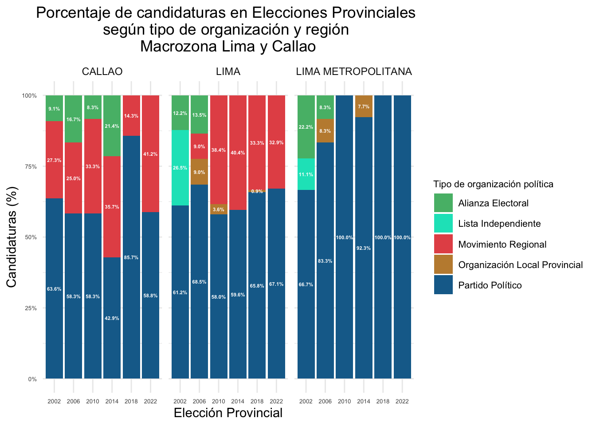
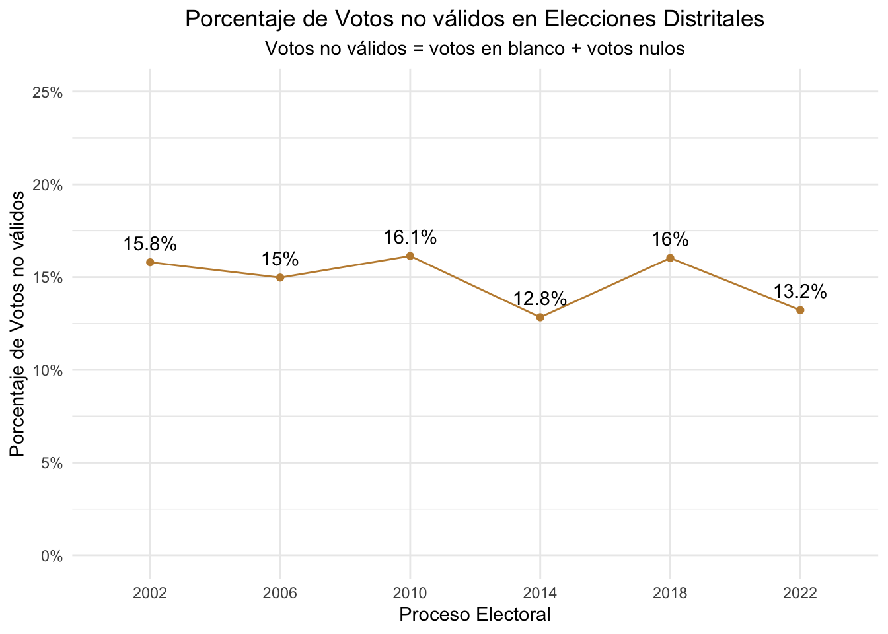

5 Movimientos regionales vs. Partidos Nacionales
Las Elecciones Regionales y Municipales son mayoritariamente una competencia entre movimientos regionales ¿verdadero o falso?

5.1 Elecciones Regionales
Número de candidaturas en total
| Elección | Número de candidaturas |
|---|---|
| Regional 2002 | 223 |
| Regional 2006 | 225 |
| Regional 2010 | 295 |
| Regional 2014 | 311 |
| Regional 2018 | 314 |
| Regional 2022 | 203 |
Número de candidaturas por tipo
| Elección | Partido Político | Movimiento Regional | Alianza Electoral | Total |
|---|---|---|---|---|
| Regional 2002 | 149 | 52 | 22 | 223 |
| Regional 2006 | 140 | 70 | 15 | 225 |
| Regional 2010 | 138 | 140 | 17 | 295 |
| Regional 2014 | 153 | 146 | 12 | 311 |
| Regional 2018 | 223 | 91 | 0 | 314 |
| Regional 2022 | 116 | 87 | 0 | 203 |

Porcentaje de candidaturas por tipo y región





SEGUNDA VUELTA
Número de candidaturas en total
| Elección | Número de candidaturas |
|---|---|
| Segunda Regional 2010 | 20 |
| Segunda Regional 2014 | 28 |
| Segunda Regional 2018 | 30 |
| Segunda Regional 2022 | 18 |
Número de candidaturas por tipo
| Elección | Partido Político | Movimiento Regional | Alianza Electoral | Total |
|---|---|---|---|---|
| Segunda Regional 2010 | 6 | 12 | 2 | 20 |
| Segunda Regional 2014 | 7 | 21 | 0 | 28 |
| Segunda Regional 2018 | 11 | 19 | 0 | 30 |
| Segunda Regional 2022 | 6 | 12 | 0 | 18 |

5.2 Elecciones Provinciales
Número de candidaturas en total
| Elección | Número de candidaturas |
|---|---|
| Provincial 2002 | 1779 |
| Provincial 2006 | 1654 |
| Provincial 2010 | 1754 |
| Provincial 2014 | 1829 |
| Provincial 2018 | 1885 |
| Provincial 2022 | 1391 |
Número de candidaturas por tipo
| Elección | Partido Político | Movimiento Regional | Alianza Electoral | Organización Local Provincial | Lista Independiente | Total |
|---|---|---|---|---|---|---|
| Provincial 2002 | 1046 | 226 | 171 | 0 | 356 | 1779 |
| Provincial 2006 | 1012 | 430 | 111 | 101 | 0 | 1654 |
| Provincial 2010 | 846 | 754 | 112 | 42 | 0 | 1754 |
| Provincial 2014 | 817 | 908 | 62 | 42 | 0 | 1829 |
| Provincial 2018 | 1217 | 665 | 0 | 3 | 0 | 1885 |
| Provincial 2022 | 762 | 629 | 0 | 0 | 0 | 1391 |

Porcentaje de candidaturas provinciales por tipo y región



5.3 Elecciones Distritales
Número de candidaturas en total
| Elección | Número de candidaturas |
|---|---|
| Distrital 2002 | 13220 |
| Distrital 2006 | 11160 |
| Distrital 2010 | 11420 |
| Distrital 2014 | 11536 |
| Distrital 2018 | 11599 |
| Distrital 2022 | 9128 |
Número de candidaturas por tipo
| Elección | Partido Político | Movimiento Regional | Alianza Electoral | Organización Local Provincial | Organización Local Distrital | Lista Independiente | Total |
|---|---|---|---|---|---|---|---|
| Distrital 2002 | 7472 | 1518 | 1218 | 0 | 0 | 3012 | 13220 |
| Distrital 2006 | 6775 | 2748 | 803 | 543 | 291 | 0 | 11160 |
| Distrital 2010 | 5217 | 4946 | 799 | 180 | 278 | 0 | 11420 |
| Distrital 2014 | 4741 | 5987 | 504 | 148 | 156 | 0 | 11536 |
| Distrital 2018 | 7023 | 4540 | 0 | 18 | 18 | 0 | 11599 |
| Distrital 2022 | 4774 | 4354 | 0 | 0 | 0 | 0 | 9128 |

Numero de candidaturas distritales por tipo y region